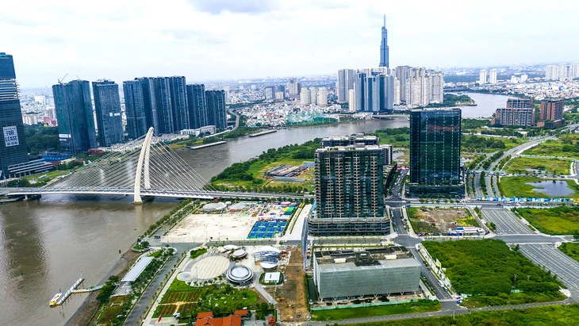

Tại tờ trình Ủy ban Thường vụ Quốc hội, Chính phủ nhìn nhận thực tế, vai trò đầu tàu, động lực, dẫn dắt của TP.HCM đối với toàn vùng Đông Nam Bộ, cả nước nói chung, xét trên bình diện tổng thể, dài hạn và quá trình phát triển của ba địa phương hợp nhất thành một vẫn còn những nút thắt mang tính cấu trúc. Điều này khiến tăng trưởng chưa bền vững, hiệu quả đầu tư chưa tương xứng với tiềm năng và năng lực cạnh tranh quốc tế còn hạn chế.
Chính phủ cho rằng cần bổ sung một số khung pháp lý vượt trội để triển khai nhằm tận dụng các cơ hội thu hút đầu tư và giải quyết ngay các điểm nghẽn mang tính cấp bách của TP vào nghị quyết 98 cũng như quy định hiện hành để phát huy tối đa tiềm năng, thế mạnh, nhất là các chính sách thu hút nhà đầu tư chiến lược hiện nay.
Dự thảo cũng quy định rõ trình tự, thủ tục lựa chọn nhà đầu tư chiến lược. Theo đó, đối với dự án thuộc diện chấp thuận chủ trương đầu tư, cơ quan có thẩm quyền được đồng thời chấp thuận chủ trương đầu tư và nhà đầu tư nếu chỉ có một nhà đầu tư đáp ứng điều kiện.

TP.HCM muốn có thêm cơ chế để mời gọi nhà đầu tư chiến lược tham gia đầu tư hạ tầng. Trong ảnh: khu đô thị mới Thủ Thiêm